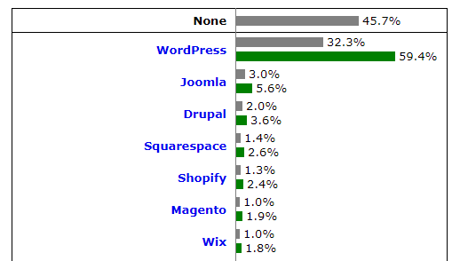

手軽にスライドを作成できるjsフレームワーク
カネウチカズコさんがイラストを作成したja.wordpress.org の公式キャラクター
現在、世界で400種類のCMSがある
全てのサイトのWebサイトの32%がWordPress
「wp-」とかあるとほぼ確定
<link rel="stylesheet" id="common_style-css" href="/wordpress/wp-content/themes/kakakucom/common_style.css?ver=20180329" type="text/css" media="all" />「メールアドレス」と「サイトの数」を入力
Localをダブルクリックして、起動
「Let's Go!」をクリック
「CREATE A NEW SITE」をクリック
サイトの名前を入力
推奨を選択
管理ユーザーの設定（admin/password）
「ADMIN」をクリックして管理画面へ
WordPressの管理画面にアクセスする
「サイトの言語」を「日本語」に変更
・Macの場合
Macintosh HD\ユーザ\（ユーザー名）\Local Sites\（プロジェクト名）\app\public\
・Windowsの場合
C:\Users\ユーザー名\Local Sites\サイト名\app\public
「demo」というフォルダを/wp-contet/themes/配下に配置する
<!DOCTYPE html>
<html lang="ja">
<head>
<meta charset="UTF-8">
<title>タイトル</title>
<link rel="stylesheet" href="style.css">
</head>
<body>
<header>
<h1><a href="">サンプルサイト</a></h1>
</header>
<div class="site-content">
<main>
<article>
<h2><a href="">記事のタイトル</a></h2>
<p>記事の抜粋が入ります記事の抜粋が入ります記事の抜粋が入ります記事の抜粋が入ります</p>
</article>
<article>
<h2><a href="">記事のタイトル</a></h2>
<p>記事の抜粋が入ります記事の抜粋が入ります記事の抜粋が入ります記事の抜粋が入ります</p>
</article>
<article>
<h2><a href="">記事のタイトル</a></h2>
<p>記事の抜粋が入ります記事の抜粋が入ります記事の抜粋が入ります記事の抜粋が入ります</p>
</article>
</main>
<aside>
<h2>カテゴリ</h2>
<ul>
<li><a href="">カテゴリA</a></li>
<li><a href="">カテゴリB</a></li>
<li><a href="">カテゴリC</a></li>
</ul>
</aside>
</div>
<footer>
<small>©2018 xxxx</small>
</footer>
</body>
</html>
@charset "utf-8";
/*
Theme Name: demo
Theme URI: http://demo.com/
Description: サンプルテーマ
Version: 1.0
Author: xxxxx
Author URI: http://demo.com/
*/
/* 以下ブログテーマのスタイル */
a {
color: #0073aa;
text-decoration: none;
}
body {
background: #fff;
color: #32373c;
font-family: Open Sans,sans-serif;
font-size: 100%;
line-height: 1.5;
margin: 0;
}
header {
background: #0073aa;
padding: 3.0517578125rem 1.5625rem;
}
header h1 a {
color: #fff;
display: block;
font-size: 48.828px;
font-size: 3.0517578125rem;
font-weight: 300;
line-height: 1;
margin: 32px 0 16px;
margin: 2rem 0 1rem;
text-align: center;
}
.site-content {
margin: 0 auto;
max-width: 960px;
display: flex;
flex-direction: row;
flex-wrap: wrap;
}
main {
width: 73%;
}
article {
margin-bottom: 3.0517578125rem;
max-width: 40em;
}
h2 {
font-size: 2.44140625rem;
}
aside {
width: 23%;
font-size: .8rem;
}
footer {
clear: both;
text-align: center;
background-color: #f7f7f7;
border-top: 1px solid #dfdfdf;
padding: 22px 14px 65px;
}
トップページ:index.php
ヘッダー：header.php
フッター：footer.php
サイドバー：sidebar.php
記事ページ：single.php
テーマ関数ファイル：functions.php
スタイルシート：style.css
<!DOCTYPE html>
<html lang="ja">
<head>
<meta charset="UTF-8">
<title>タイトル</title>
<link rel="stylesheet" href="style.css">
</head>
<body>
<header>
<h1><a href="">サンプルサイト</a></h1>
</header>
titleタグ部分を以下のように書き換え
<?php wp_title(' | ', true, 'right'); ?>
スタイルシートのリンク先を以下のように書き換え
head終了タグの直前の行に以下のタグを挿入
<?php wp_head(); ?>
h1タグ部分を以下のように書き換え
<h1><a href="<?php echo esc_url( home_url( '/' ) ); ?>"><?php bloginfo('name'); ?></a></h1>
<footer>
<small>©2018 xxxx</small>
</footer>
</body>
</html>
body終了タグの前の行に以下のタグを挿入
<?php wp_footer(); ?>
<aside>
<?php if ( !function_exists('dynamic_sidebar') || !dynamic_sidebar() ) : ?>
<h2 class="widget_title">About</h2>
<p>ウィジェットが設定されていない場合、ここが表示されます。</p>
<?php endif; ?>
</aside>
</div>
<?php
if ( function_exists('register_sidebar') ) {
register_sidebar(array(
'id' => 'sidebar-1',
'before_widget' => '',
'after_widget' => '',
'before_title' => '<h2 class="widget_title">',
'after_title' => '</h2>',
));
}
?>
<?php get_header(); ?>
<?php get_sidebar(); ?>
<?php get_footer(); ?>
<div class="site-content">
<main>
<?php
if ( have_posts() ) : while ( have_posts() ) : the_post();
?>
<section class="post">
<h2><a href="<?php the_permalink(); ?>"><?php the_title(); ?></a></h2>
<?php the_excerpt(); ?>
</section>
<?php
endwhile;
endif;
?>
</main>
<?php get_header(); ?>
<div class="site-content">
<main>
<?php
if ( have_posts() ) : while ( have_posts() ) : the_post();
?>
<article>
<h2><?php the_title(); ?></h2>
<?php the_content(); ?>
</article>
<?php
endwhile;
endif;
?>
</main>
<?php get_sidebar(); ?>
<?php get_footer(); ?>